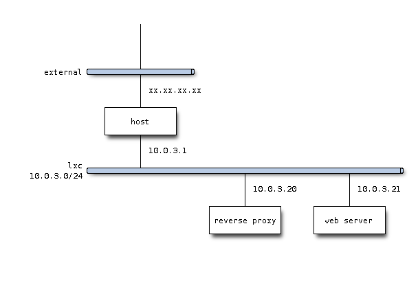
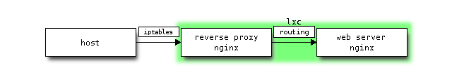

static web server in lxc
Let us create web site in lxc environment. That is, with rough design as follows.
design
- network

- traffic flow

web server
Create an instance of ubuntu under the name of “web”.
$ sudo lxc-create -n web -t ubuntu
$ sudo lxc-start -n web -d
$ ssh -l ubuntu `cut -d " " -f3 /var/lib/misc/dnsmasq.lxcbr0.leases`
Let us configure timezone to JST and network interface to static one.
$ sudo ln -sf /usr/share/zoneinfo/Asia/Tokyo /etc/localtime
$ tail -8 /etc/network/interfaces
auto eth0
#iface eth0 inet dhcp
iface eth0 inet static
address 10.0.3.21
network 10.0.3.0
netmask 255.255.255.0
broadcast 10.0.3.255
gateway 10.0.3.1
nginx
Now install and configure nginx as container of static content.
$ sudo apt-get install nginx
Configuration files related to nginx are deployed under /etc/nginx directory.
$ tree
.
├── conf.d
├── fastcgi_params
├── koi-utf
├── koi-win
├── mime.types
├── naxsi_core.rules
├── naxsi.rules
├── nginx.conf
├── proxy_params
├── scgi_params
├── sites-available
│ └── default
├── sites-enabled
│ └── default -> /etc/nginx/sites-available/default
├── uwsgi_params
└── win-utf
Decrease number of worker process.
$ diff nginx.conf nginx.conf.org
2c2
< worker_processes 1;
---
> worker_processes 4;
(It may not be necessary though,) configure nginx so as to start upon boot time.
$ update-rc.d nginx defaults
virtual host
Create a virtual host configuration file, say, “wiki” under /etc/nginx/sites-available directory.
server {
listen 80;
access_log /home/ubuntu/wiki/logs/access.log;
error_log /home/ubuntu/wiki/logs/error.log debug;
location / {
root /home/ubuntu/wiki/build/html/;
index index.html;
}
}
Make a symbolic link from under /etc/nginx/sites-enabled directory. And remove default configuration if not necessary.
$ sudo ln -s /etc/nginx/sites-available/wiki .
$ rm -i default